Craig Whitehead is an outstanding British street photographer and a lecturer at the University of Cambridge. His work shows a very high level in color, light, composition, and emotional expression.
He has a sharp eye for composition, and he always pulls geometric forms and visual elements out of busy street scenes. He also pays attention to detail, capturing small points that others never notice, which adds unique charm and depth to his work.
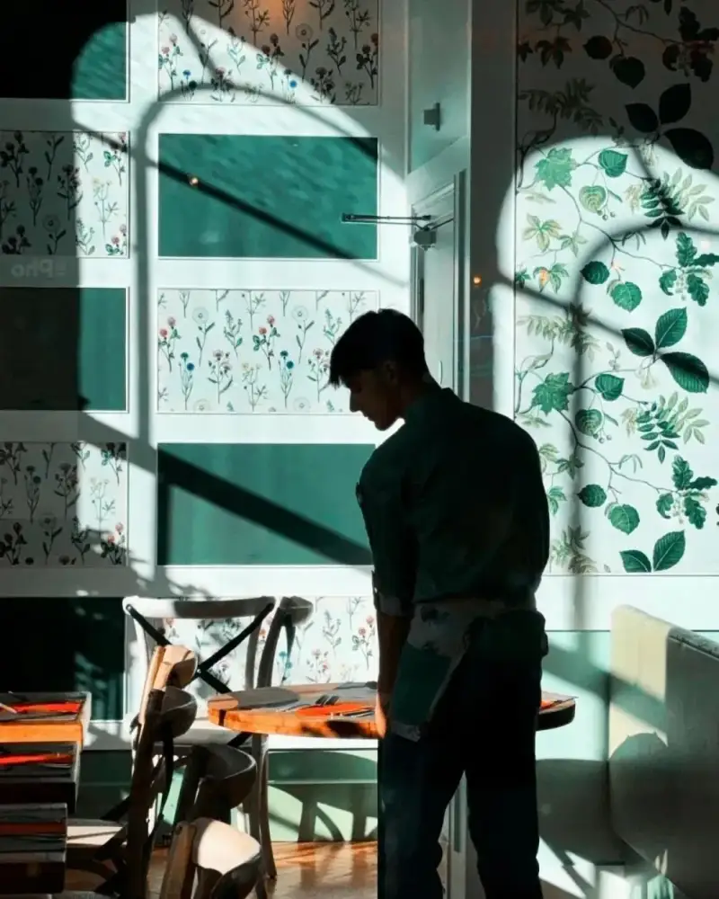
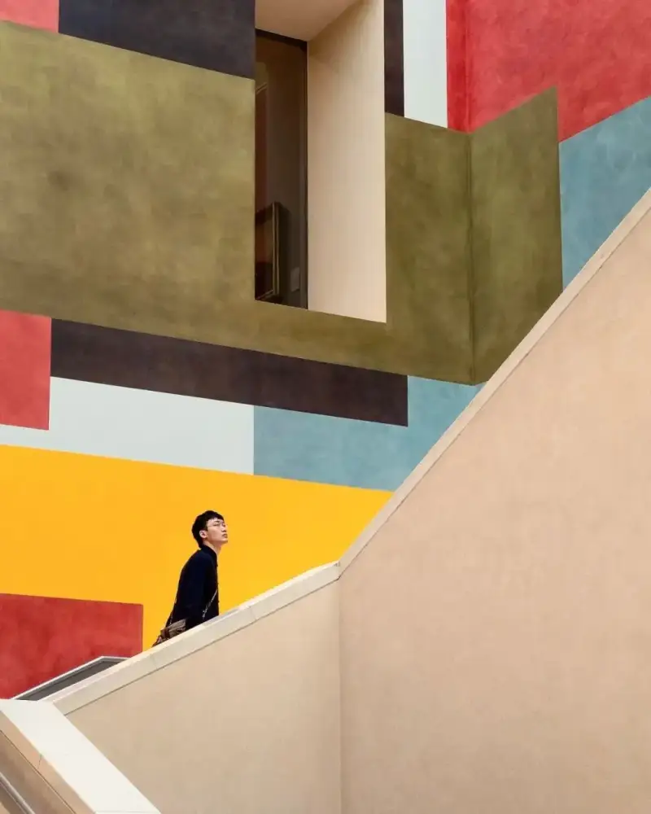
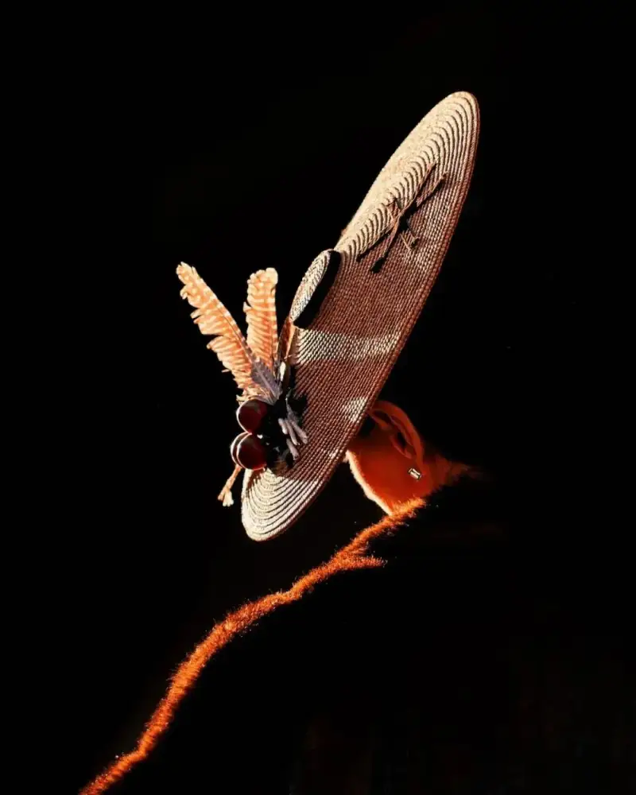
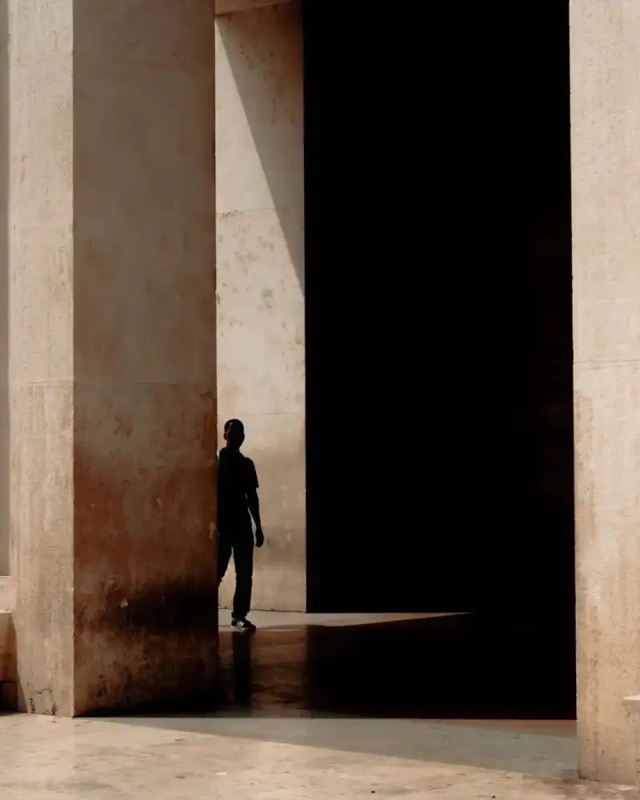
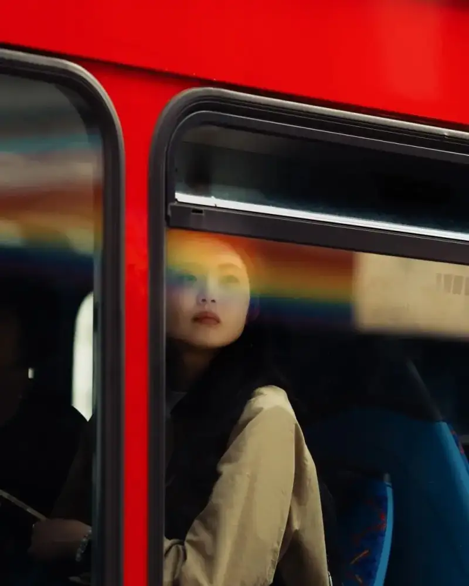
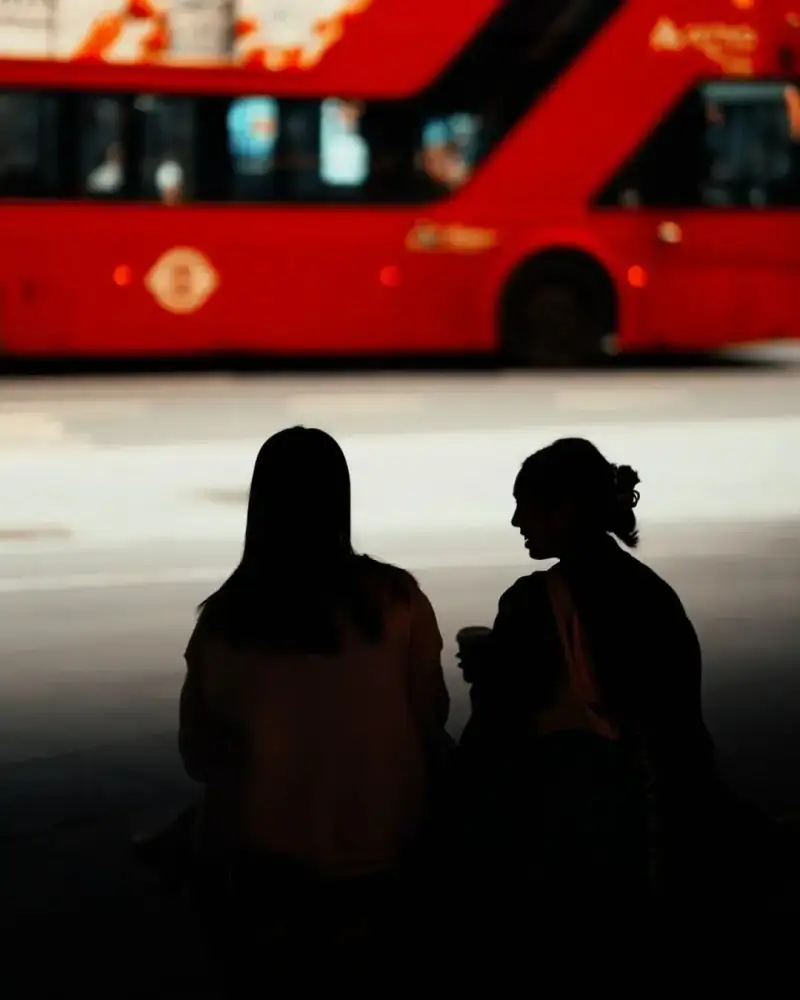
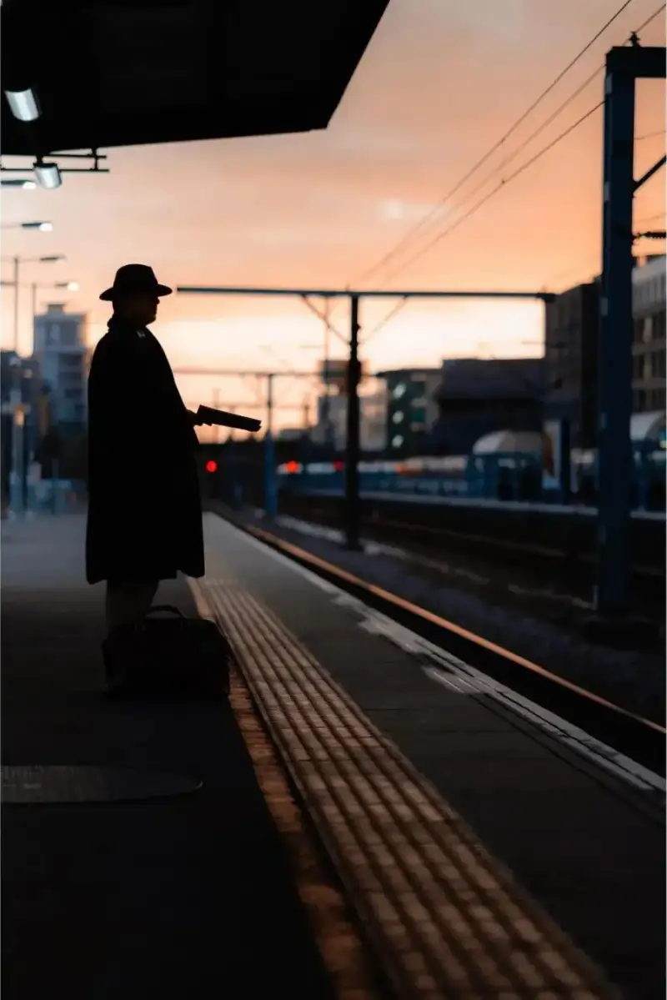
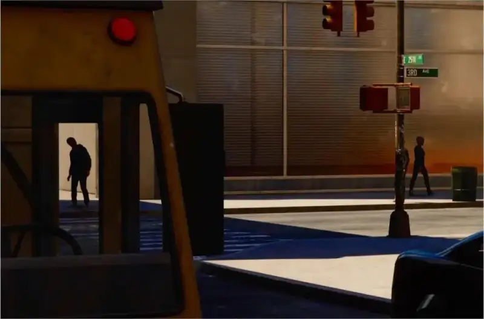
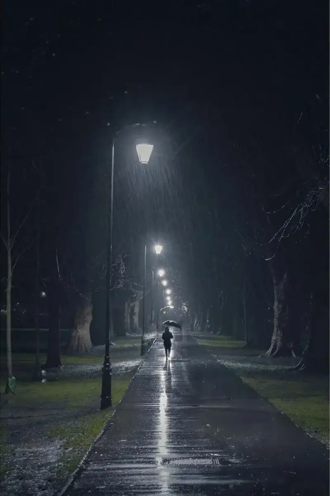
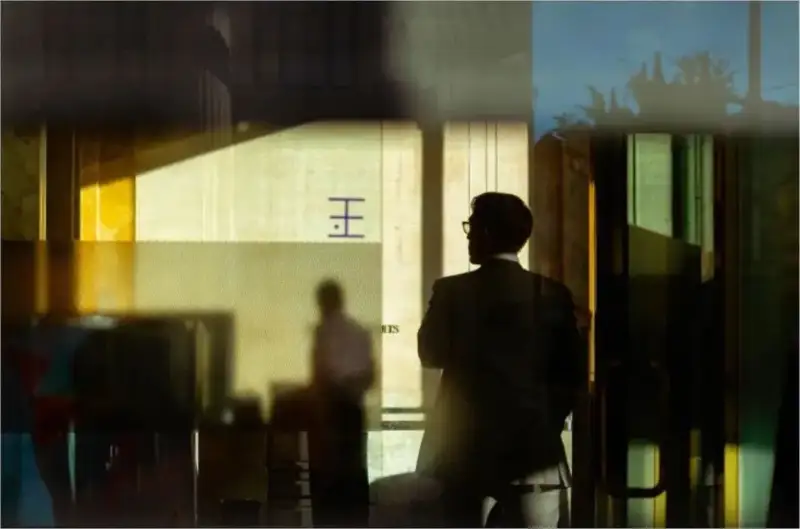
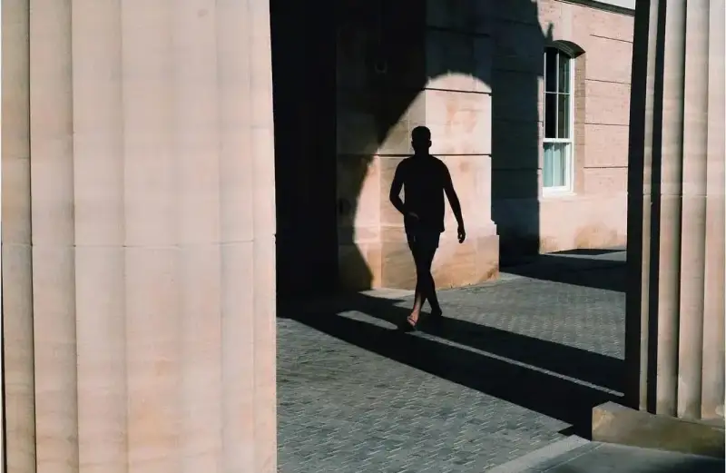
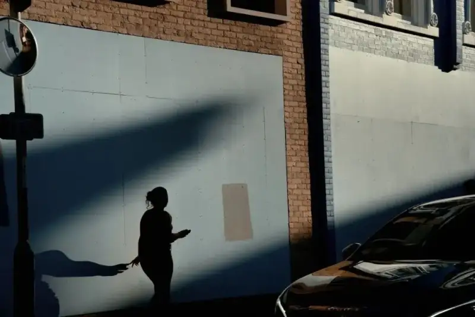